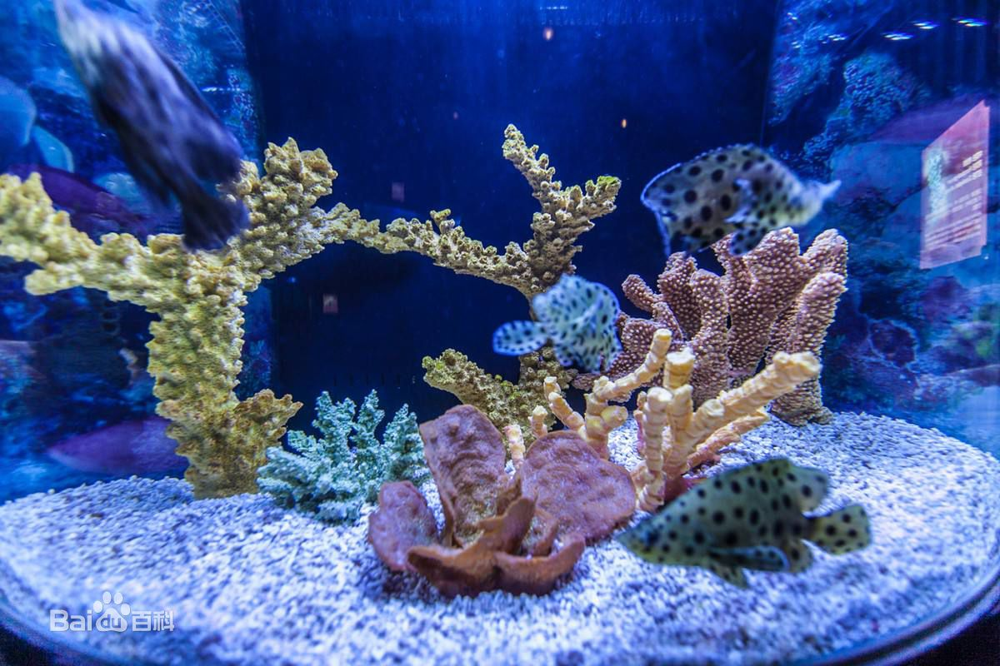

上海海洋水族馆位于中国上海浦东新区陆家嘴环路1388号，紧邻东方明珠塔。由新加坡星雅集团和中国保利集团，联合投资5500万美元打造而成，建筑面积20500平方米。  于2002年2月对公众开放，每年平均接待来自世界各地的游客超过100万人次，被授予国家及上海市“科普教育基地”称号，也是世界上最大的人造海水水族馆之一。
上海海洋水族馆 是一座具国际一流水准的现代化大型海洋水族馆。分中国、南美洲(亚马逊)、澳大利亚、非洲、东南亚、冷水、极地、海岸、深海九大展区。
展出了来自五大洲、四大洋的450多个品种、12000多条珍稀鱼类及濒临绝种的稀有生物。水族馆中还有长155米、也是世界上最长的海底隧道之一，让游客有身临其境之感。
其中最有特色的是南美洲的电鳗、澳洲的锯鳐和射水鱼、南极洲的企鹅等，以及镇馆之宝草海龙、缎带海龙的风姿。
游客们在惊叹水母曼妙身影的同时，又将在深海区领略包括惊险的“鲨鱼海湾”在内6种不同海洋风情。
建筑布局形似金字塔，整体建筑由主楼水族馆及辅助楼两栋建筑物组成，主楼各层具体分布为： 第一层：设有大厅、售票处、礼品店及餐厅；参观游客由第一层入口乘自动扶梯直达第三层开始游览水族馆； 第三层：化石展览、武林大会--水生生物生存竞技仿生展、SOS拯救鲨鱼展、长江流域珍稀水生物展区，中国展区、南美洲展区、澳大利亚展区。
游客参观了第三层后 通过自动扶梯下到第二层； 第二层：分为澳大利亚、非洲、东南亚、冷水、极地、海岸六大展区。游客参观第二层后直接乘自动扶梯下到地下二层； 地下二层：水族馆主体，深海展区。游客进入一条自动步行隧道后，穿过体积达650立方米的鹰鲼水景展示缸和海底隧道，最后由隧道出口回到第一层的礼品中心及餐厅，完成整个参观的旅程。
水族馆除了展出世界上有特色的淡水及海洋生物外，最有特色的展示草海龙、缎带海龙、水母、企鹅、斑海豹、沙虎鲨、扬子鳄、中华鲟等世界珍稀品种。除了展示来自五大洲、四大洋水生物外，还特别设置了介绍各大洲人文、地理环境的序厅。
展出空间以装饰、主题、图案和音响展现不同区域鱼类原产地国家的地理、人文风貌。
中国展区：上海海洋水族馆是全世界唯一一家有独立的中国及长江流域展区来展示中国特有水生生物的水族馆，其中展示的生物大多数均为国家保护动物，包括中华鲟、胭脂鱼、扬子鳄、娃娃鱼（大鲵）。
南美洲区：南美洲拥有世界上种类和数量最多的淡水鱼。巨骨舌鱼作为最大的淡水有鳞硬骨鱼之一，也在这里繁衍生息。亚马逊河是世界上流域面积最广的河流，那里人迹罕至，覆盖着大片热带原始丛林，充满着神秘的色彩。
澳大利亚区： 澳大利亚淡水鱼种类虽然不多，但大多数都是其它地方见不到的特有鱼类。为什么会这样呢？这是因为澳洲大陆与其它大陆板块分隔了约五千万年，两地的鱼类无法接触，无法进行种群杂交，结果使澳大利亚的淡水鱼一直保持着自身的独特性。
非洲区： 非洲不仅有尼罗河、刚果河等河流，还有东非大裂谷带湖区，其中蕴藏着很多种鱼类，最受瞩目的是维多利亚湖、坦噶尼喀湖和马拉维湖的慈鲷科鱼。这些湖泊是在距今50至200万年前形成的，当时由河川进入湖泊的少数鱼，各自适应其新环境，经过无数次分化之后，才演变成今天的大繁荣社会。
东南亚区：东南亚热带雨林是世界上最古老的热带雨林之一，较高的森林覆盖率，壮丽的自然景观和丰富的生物多样性，为生活在这里的生物提供了丰富的食物和理想的栖息地。种类繁多的大型东南亚鱼类在这里“安居乐业”，欣欣向荣的景象尽显无遗。
冷水区： 作为冷水区唯一的展缸---海豹缸，其半弧形亚克力缸体 构造是我馆另一个独一无二的设计。在这里您可以同四只可爱的斑海豹近距离的“接触”。
极地区： 听着呼啸而过的风声，企鹅朋友们正翘首以待，欢迎着您的到来。只见它们身着“燕尾服”一摇一摆，展现它们憨态可掬的绅士风采。
海岸区： 进入到这个展区，您将被海洋生物品种之多样性、色彩之丰富及其生活习性之奇特而震撼！著有“活化石”之称的马蹄蟹、会改变性别的珊瑚礁斜坡鱼、被誉为我馆“镇馆之宝”的草海龙、缎带海龙等形态各异的生物将会让您流连忘返！
深海区： 海岸线、海湾和珊瑚礁以外是开阔的海洋，许多远洋捕食性动物在那里游弋出没。
特别展区： 自开馆以来，常年坚持举办的“特别展”一直备受外界瞩目。称其为特别展是因为：它是一个以特殊“馆中馆”形式集合关联生物，综合并集中呈现的主题型展览，它为更多游客全面和有针对性的了解海洋知识和生物创造了更好的平台，也是我们着力体现的科普科教园地。